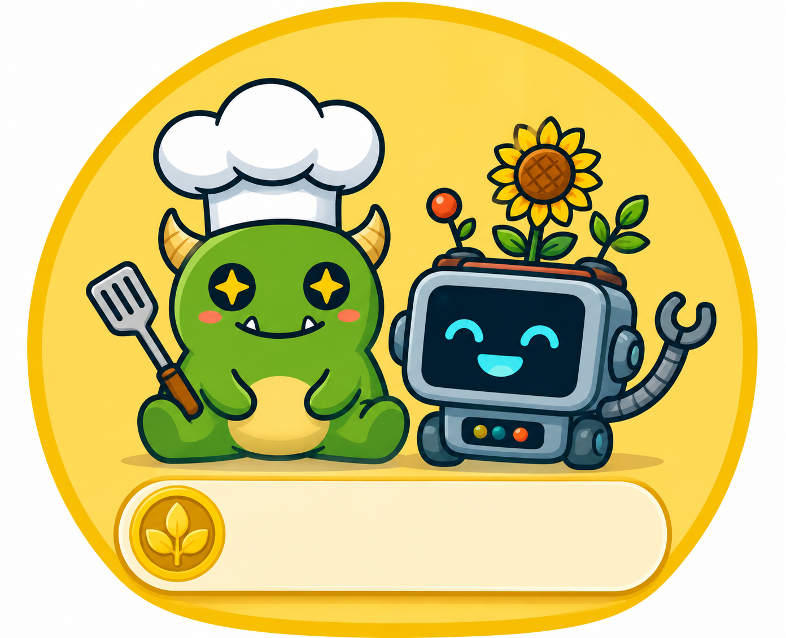

עלילות השף הירוק
״עלילות השף הירוק״ היא אפליקציית משחק אינטראקטיבית לילדים בגילאי 6–10. דרך משחקונים, אתגרים, משימות יצירתיות ומתכונים מותאמי גיל, הילדים יוצאים להרפתקה מהנה עם השף הירוק וביטו הרובוט ומגלים את עולם הבישול הבריא בדרך חווייתית ומסקרנת.
אנחנו מאמינים שסקרנות היא המפתח ללמידה. לכן האפליקציה נועדה לעודד ילדים לחקור, לשאול שאלות, ולהרגיש בטוחים יותר סביב אוכל, בישול ומדע.
בחבילה הזו המטבח הופך למעבדת מדע! הילד/ה עוברים חמישה תחנות-ניסוי — כל אחת משלבת מעבדה וירטואלית קטנה (ניחוש, מדידה והסקת מסקנות) יחד עם מתכון אמיתי להכנה במטבח הבית. תחנה חמישית (הר געש) היא בונוס אקסטרא שנפתח אחרי השלמת ארבע התחנות הראשונות.
שמרים הם יצורים חד-תאיים חיים שניזונים מסוכר ומשחררים גז פחמן דו-חמצני — זה מה שגורם לבצק לתפוח. הילד/ה משווים בין כוסות עם תנאים שונים (חום, סוכר) ולומדים לבודד משתנה אחד כדי להבין מה באמת משפיע על התוצאה.
פקטין — חומר טבעי שנמצא בקליפות ובליבות של פירות כמו תפוחים — יחד עם חום וחומצה (לימון) הופכים נוזל פירות לריבה סמיכה. הילד/ה מתנסים בבדיקת "מוכנות" מדעית אמיתית (מבחן הצלחת הקרה) במקום רק להעריך בעין.
מיץ כרוב סגול הוא מחוון טבעי לחומציות: הוא משנה צבע לפי אם הנוזל חומצי (כמו חומץ ולימון) או בסיסי (כמו סודה לשתייה). הילד/ה לומדים לסווג חומרים מהמטבח לפי תכונה משותפת.
מלח מוריד את נקודת הקיפאון של הקרח, וכך הקרח נהיה קר יותר ומקפיא את תערובת הגלידה מהר יותר. הילד/ה עורכים ניסוי השוואתי אמיתי — שקית עם מלח מול שקית בלי מלח (קבוצת ביקורת).
תגובה כימית בין חומצה (חומץ) לבסיס (סודה לשתייה) משחררת גז פחמן דו-חמצני שיוצר את "ההתפרצות". הילד/ה מתנסים ב"מבחן הוגן" — שינוי משתנה אחד בלבד, כדי לדעת בוודאות מה גרם להבדל.
שמרים יבשים וקמח · סוכר · שמן צמחי/זית · ביצה ושומשום (ניסוי 1) · תותים טריים ותפוח עץ ירוק ולימון (ניסוי 2) · כרוב סגול, חומץ וסודה לשתייה (ניסוי 3) · חלב קוקוס, תמצית וניל, מלח גס ושקיות עם סגירה (ניסוי 4) · נייר כסף וסבון כלים (ניסוי 5, בנוסף לחומץ ולסודה שכבר ברשימה).
הרשימה המלאה עם כמויות מדויקות לכל ניסוי נמצאת בעמוד האחרון של חוברת המתכונים להורדה למטה.
להלן דפי המתכון המלאים להורדה. מומלץ להדפיס ולתלות במטבח לפני שמתחילים לבשל יחד!